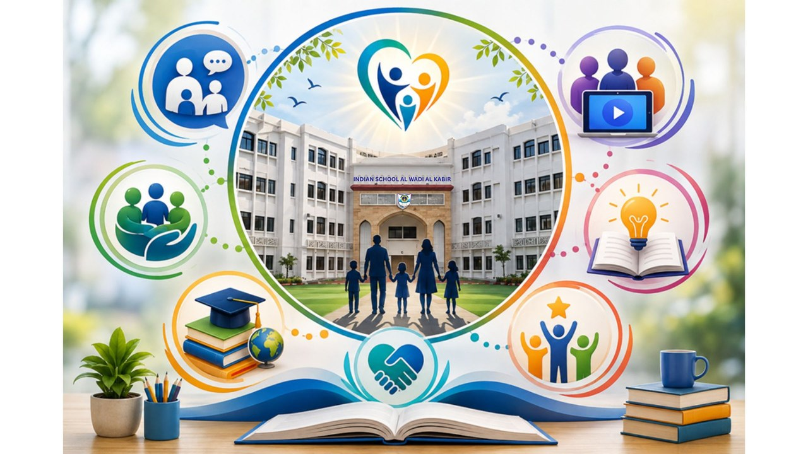

Live Zone
PULSE Live Zone
Curated Conversations. Meaningful Voices. Shared Understanding.
- Listen.
- Connect.
- Reflect.
- Respond.
The journey of education is enriched when schools and families remain connected through meaningful conversations.
PULSE Live Zone is our dynamic space for parent voice, curated conversations and timely engagement — bringing together questions, reflections, perspectives and topics that are relevant to our parent community.
Through carefully selected themes, polls, questions, responses and conversations, this space keeps the home–school partnership current, connected and purposeful.

What’s Live?
From time to time, PULSE Live Zone may feature:
-
Parent Voice
Selected parent perspectives, reflections and experiences that contribute to meaningful community conversations.
-
You Ask. We Respond.
Answers to questions and themes identified through parent interactions and engagement.
-
PULSE Poll
Quick, focused polls that invite parents to share their perspectives on relevant aspects of school and learning.
-
In Focus
A particular topic, stage or aspect of the child’s journey explored through a parent-friendly lens.
-
Community Highlights
Moments of collaboration, participation and shared achievement from across our ISWK parent community.
A Space That Listens With Purpose
PULSE Live Zone is thoughtfully moderated and curated by the school to ensure that every featured conversation is relevant, constructive, respectful and aligned with the needs of our students and families.
The purpose is not simply to collect opinions. It is to create opportunities for understanding, reflection and meaningful engagement.
- Your Voice
- Our Listening
- Shared Understanding
Through this evolving space, we hope to:
- Listen to the perspectives of our parent community.
- Understand emerging questions, interests and needs.
- Share relevant information and perspectives.
- Connect families with the wider school community.
- Strengthen the partnership between home and school.
A Living Conversation
The content of PULSE Live Zone will evolve throughout the year, reflecting the questions, themes, experiences and priorities that emerge across our parent community.
- Some conversations may invite a quick response.
- Some may offer a new perspective.
- Some may answer a question many parents are asking.
- Some may simply give us an opportunity to pause and think.
Because meaningful partnership is built one conversation at a time.
Parent Voice
Voices from Our Community
Reflections shared by parents across our stages — in their own words, and published only with their permission.
What’s On Your Pulse?
Stay connected to the conversations, insights and updates that matter to your family and your child’s learning journey.
Check back regularly. New conversations and features will be added throughout the year.
PULSE Live Zone
A curated space for parent voice and meaningful engagement.
Listen. Connect. Reflect. Respond.
One Partnership. One Purpose. One ISWK Family.